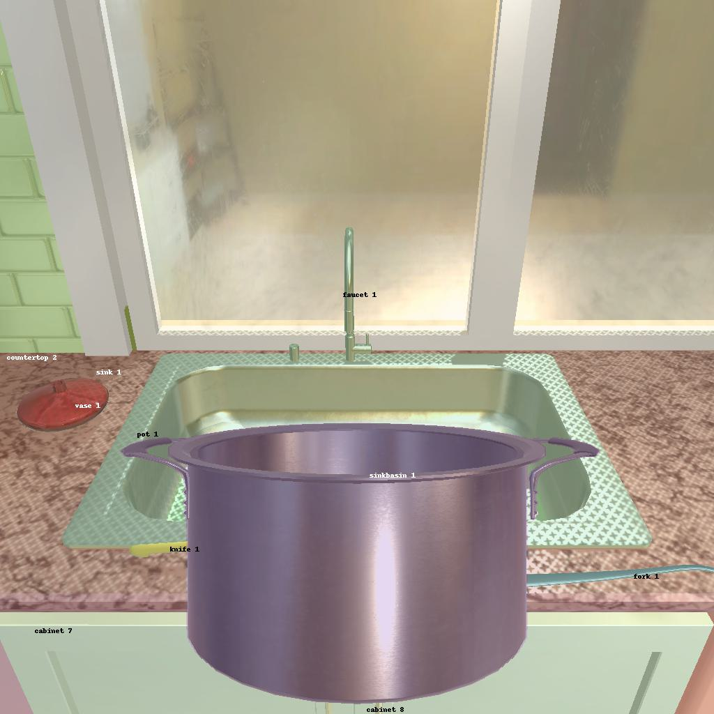

---------------------------------------------------------task: 16---------------------------------------------------------
--------------------------------------------------------------------------------------------------------------------------------------------------------------------
--------------------------------------------------------------------------------------------------------------------------------------------------------------------
Step:--------------------------------------------------------------------------14-------------------------------------------------------------------------------
----------------------------------------
VLM Prompt:
Image1:
Image2:
Image3:
**Instruction**
1. Analyze the provided image to identify all visible household objects, focusing on those relevant to the task description "cool some pan and put it in sinkbasin."
2. Use the analysis of the image and the task hint "The agent must find an object of the desired type, pick it up, go to a fridge, cool the object with the fridge, then find the correct location to place it, and put it down there. The agent does not need to use the fridge button or open the fridge to cool the object, and the agent just needs to do action that is "cool the object with the fridge"." to answer the question: what is the most reasonable action in the choices for the task description "cool some pan and put it in sinkbasin"?
4. Decide and write the answer using the template: The answer is: (i): , where i is the real number. If there is no desired object in the image, search every place based on **Initial Observation** to find the object. And if no one is exactly correct, choose a similar answer.
**Initial Observation**
You are in the middle of a room. Looking quickly around you, you can see cabinet (1-9), countertop (1-3), drawer (1-9), stoveburner (1-4), microwave (1), sink (1), fridge (1), toaster (1), coffeemachine (1), sinkbasin (1), shelf (1-3), garbagecan (1)
**Answer Choices**
(1): go to cabinet 1
(2): go to countertop 1
(3): go to cabinet 2
(4): go to countertop 2
(5): go to drawer 1
(6): go to drawer 2
(7): go to drawer 3
(8): go to drawer 4
(9): go to stoveburner 1
(10): go to drawer 5
(11): go to stoveburner 2
(12): go to stoveburner 3
(13): go to stoveburner 4
(14): go to cabinet 3
(15): go to cabinet 4
(16): go to microwave 1
(17): go to cabinet 5
(18): go to cabinet 6
(19): go to cabinet 7
(20): go to sink 1
(21): go to fridge 1
(22): go to toaster 1
(23): go to coffeemachine 1
(24): go to cabinet 8
(25): go to drawer 6
(26): go to drawer 7
(27): go to drawer 8
(28): go to shelf 1
(29): go to shelf 2
(30): go to countertop 3
(31): go to shelf 3
(32): go to drawer 9
(33): go to cabinet 9
(34): go to garbagecan 1
(35): clean pot 1 with sink 1
(36): clean pot 1 with sinkbasin 1
(37): examine pot 1
(38): examine sinkbasin 1
**Answer**
Let's think step by step by following the instructions.
----------------------------------------
----------------------------------------
Original Response:
First, we need to find a pan, which in this case is labeled as "pot 1" in all the images provided. This satisfies the "some pan" part of the task description. Next, according to the task hint, the agent must cool the object with the fridge. The fridge is labeled as "fridge 1" in Image1. Lastly, the agent needs to put the cooled pan in the "sinkbasin," which is labeled as "sinkbasin 1" in Image2 and Image3.
Based on the task description and the analysis of the images, the most reasonable action for the agent to perform would be to pick up "pot 1," go to "fridge 1" to cool it, and then put it in "sinkbasin 1." However, as the answer choices do not provide the option to pick up the pot or cool it with the fridge directly, we must choose the action that involves placing the pot in the sinkbasin after it has been assumed to be cooled.
Out of the given answer choices, the closest action to the final step of the task description is to put the pot in the sinkbasin.
The answer is: (38): examine sinkbasin 1.
----------------------------------------
----------------------------------------
>>> Refine Original VLM Response and Get Pure Action: examine sinkbasin 1
----------------------------------------
-----------------------------------------------------------------
Running time: 18.097345113754272 seconds
Total Money: 10.18485
-----------------------------------------------------------------
-----------------------------------------------------------------
Text Observation:On the sinkbasin 1, you see a vase 1, a fork 1, a faucet 1, and a knife 1.
-----------------------------------------------------------------
UNSUCCEED